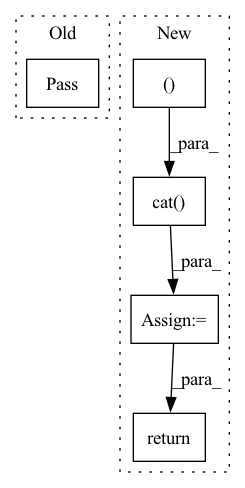

Pattern ID :34472
Before Change
// according to calculated weights (of proposal net) and indices of inverse sampling, calculate the bounds required for loss computation
// input weights (from proposal net) shape: (ray_num, num of proposal interval), inds shape (ray_num, fine_sample num + 1? TODO, 2)
def getBounds(weights:torch.Tensor, inds:torch.Tensor):
pass
class NeRF(nn.Module):
@staticmethod
def init_weight(m):After Change
ray_num, target_device = weights.shape[0], weights.device
inds = torch.gather(inds, -1, sort_inds)
starts, ends = inds[:, :-1], inds[:, 1:] + 1
sat:torch.Tensor = torch.cat( (torch.zeros(ray_num, 1, device = target_device), torch.cumsum(weights, dim = -1) ), dim = -1) // 输入的 weights是什么？proposal net 的weights
return torch.gather(sat, -1, ends) - torch.gather(sat, -1, starts)
class ProposalLoss(nn.Module):
def __init__(self): super().__init__()In pattern: SUPERPATTERN
Frequency: 3
Non-data size: 5
Instances Fragment ID: 99151834
Project Name: enigmatisms/nerf
Commit Name: c9ee74d3e40962cee741ca883d6a6a7b46ee6557
Time: 2022-04-24
Author: 984041003@qq.com
File Name: py/addtional.py
M Class Name: AnonimousClass
N Class Name: AnonimousClass
M Method Name: getBounds(3)
N Method Name: getBounds(2)
M Parent Class:
N Parent Class:
M File Name: py/addtional.py
N File Name: py/addtional.py
M Start Line: 17
M End Line: 17
N Start Line: 17
N End Line: 22
Before Change
encoded_x = encoded_x.view(pts.shape[0], pts.shape[1], direction_dim)
pass
def render(self, rgbo:torch.Tensor, depth:torch.Tensor) -> torch.Tensor:
rgb:torch.Tensor = rgbo[..., :3] // shape (ray_num, pnum, 3)
// RGB passed through sigmoidAfter Change
encoded_x = encoded_x.view(pts.shape[0], pts.shape[1], direction_dim)
tmp = self.lin_block1(encoded_x)
encoded_x = torch.cat( (tmp, encoded_x ), dim = -1)
encoded_x = self.lin_block2(encoded_x)
opacity = self.opacity_head(encoded_x)
rgb = self.rgb_layer(torch.cat((encoded_x, encoded_r), dim = -1))
return torch.cat((rgb, opacity), dim = -1)
This function is important for inverse transform sampling, since for every ray Fragment ID: 99151835
Project Name: enigmatisms/nerf
Commit Name: f1f12adffd4eec1173b9a928136600107832eb32
Time: 2022-03-22
Author: 984041003@qq.com
File Name: py/module.py
M Class Name: NeRF
N Class Name: NeRF
M Method Name: forward(2)
N Method Name: forward(3)
M Parent Class: nn.Module
N Parent Class: nn.Module
M File Name: py/module.py
N File Name: py/module.py
M Start Line: 37
M End Line: 48
N Start Line: 54
N End Line: 65
Before Change
def dynamic_pooling(self, hidden_states: torch.Tensor, left: torch.Tensor, right: torch.Tensor) -> torch.Tensor:
pass
// To do After Change
right_mask = (1-(input_mask-position_mask)) * minimum
left_hidden_state, _ = torch.max(hidden_states + left_mask.unsqueeze(-1), dim=1)
right_hidden_state, _ = torch.max(hidden_states + right_mask.unsqueeze(-1), dim=1)
hidden_state = torch.cat( (left_hidden_state, right_hidden_state ), dim=-1)
return hidden_state
// To do Fragment ID: 99151838
Project Name: thu-keg/omnievent
Commit Name: bc38773f650d53ae5e052432be4a9c522fefca30
Time: 2022-04-21
Author: penghao20170136@163.com
File Name: src/OpenEE/aggregation/aggregation.py
M Class Name: SimpleAggregation
N Class Name: SimpleAggregation
M Method Name: dynamic_pooling(4)
N Method Name: dynamic_pooling(4)
M Parent Class: object
N Parent Class: object
M File Name: src/OpenEE/aggregation/aggregation.py
N File Name: src/OpenEE/aggregation/aggregation.py
M Start Line: 39
M End Line: 39
N Start Line: 49
N End Line: 55